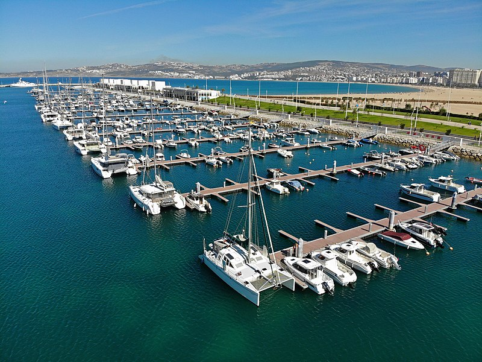

Tanger est une ville du Nord du Maroc, deuxième poumon économique du Maroc, capitale de la région de Tanger-Tétouan-Al Hoceïma. Située à l'extrémité du Nord-Ouest du pays sur le détroit de Gibraltar, la ville se trouve à 14 kilomètres de la côte espagnole. Sa population s'élève à 1 065 601 habitants au recensement de 2015.
Pays : Maroc
Région : Tanger-Tétouan-Al Hoceïma
Préfecture : Tanger-Assilah
Gentilé : Tangérois
Population : 1 065 601 hab (2014)